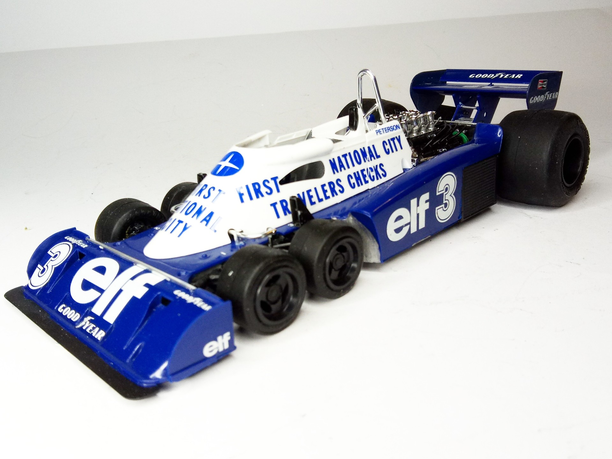
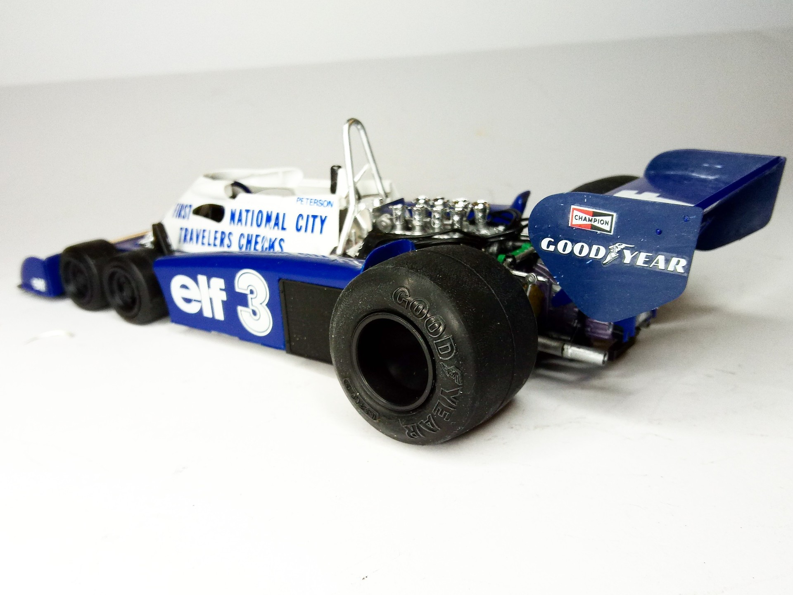

Auto e veicoli stradali · scale model archive
Tyrrell P34
Tyrrell P34 — Scale: 1/20 #Tyrrell #P34. Kit; Tamiya First National City Bank, Elf Team Tyrrell 4 (Patrick Depailler) Mai 1977 Monaco Grand Prix - Monaco…

Photo gallery

English description
Kit; Tamiya
First National City Bank, Elf Team Tyrrell 4 (Patrick Depailler) Mai 1977 Monaco Grand Prix - Monaco MC (Result: DNF)
Testimony of bygone creativity in Formula One
#1/20 #Tamiya
Descrizione italiana
First National City Bank, Elf Team Tyrrell 4, Patrick Depailler, maggio 1977, GP di Monaco. Risultato: ritirato. Testimonianza di una creatività ormai passata in Formula Uno.